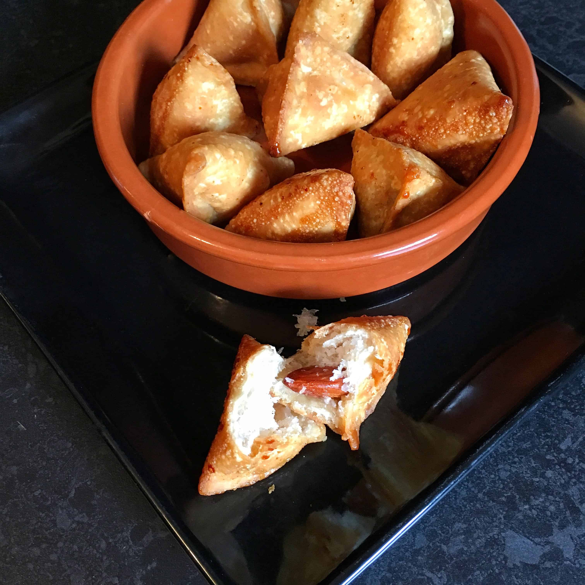

Pakistan
Sweet Coconut Samosa

Description
Sweet coconut samosas, you say? Some of you may be raising your eyebrows. Never heard of them? It's OK, I understand.
Ingredients
- Oil for frying
- 2 cups (270 g) plain flour
- 3 tablespoon (45 g) butter
- Water, as much as needed to form a dough
- ½ cup (45 g) dessicated coconut
- ½ cup (100 g) white sugar
Steps
- Begin with making the pastry. In a bowl, add the butter and use your fingertips to mix the butter into the flour, until it resembles breadcrumbs.
- Add water, a few tablespoon at a time. Use your hands to knead the dough until it forms a firm dough. Be very careful not to add too much water, as if the dough becomes too wet it will be too difficult to work with.
- Allow the dough to rest for at least 30 minutes.
- To make the filling, simply mix all the ingredients together until well incorporated and set aside.
- Take small balls out of the dough and begin to roll them out into circles, much like making a small chapatti. Cut the circles into 4 quarters.
- Working with each quarter, shape and fill the samosas as shown in the post until you have finished all the dough,
- Heat oil in a deep wok or pan on medium heat. Fry the samosas on medium heat, turning throughout the fry time.
- Serve immediately
Film Pairings